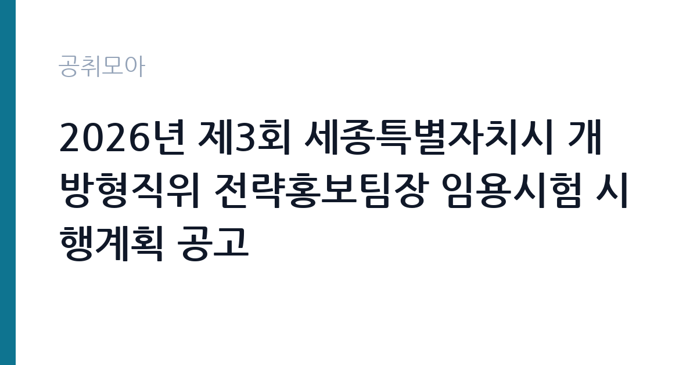

[지자체] 2026년 제3회 세종특별자치시 개방형직위 전략홍보팀장 임용시험 시행계획 공고
세종특별자치시 · 세종 · 마감 2026-11-20 (D-17) · 출처 나라일터

한눈에 보는 모집 조건
| 기관 | 세종특별자치시 |
|---|---|
| 공고명 | 2026년 제3회 세종특별자치시 개방형직위 전략홍보팀장 임용시험 시행계획 공고 |
| 고용형태 | 임기제 |
| 근무지 | 세종 |
| 게시일 | 2026-11-03 |
| 마감일 | 2026-11-20 (D-17) |
지원자격, 이렇게 읽으세요
- 지방행정사무관 또는 지방일반임기제(개방형 5호) 1명
- 접수 ~2026-11-20 마감
- 세부 조건은 원문 공고문 확인
임기제공무원은 공무원 신분이지만 임용 기간이 정해져 있습니다. 전문성이 필요한 업무에 채용되며 임용 기간과 연봉등급이 공고문에 명시됩니다. 임기 중에는 공무원으로서의 복무 규정과 이해충돌 방지 의무가 적용됩니다. 이번 공고는 세종특별자치시가 직접 진행하는 자체 전형입니다. 임기제·개방형 직위는 경력과 전문성이 가장 중요한 기준입니다. 관련 분야 경력 연수를 필수로 요구하고, 직위별로 자격 요건이 세분화됩니다. 제안서나 직무수행계획서를 제출해야 하는 경우가 많아 준비에 시간이 필요합니다. 시간선택제는 주당 근무 시간을 약정하므로 보수도 비례해 산정됩니다. 이해충돌과 겸직 제한 확인 절차가 있습니다. 제출서류는 공고문에 적힌 순서대로 정리하면 담당자가 확인하기 쉽습니다. 공고문의 응시자격 표를 보면 자격 항목이 여러 줄로 나뉘어 있으므로, 각 줄을 하나씩 체크하며 본인 해당 여부를 표시해 두면 누락을 줄일 수 있습니다.
이 공고의 포인트
이 공고의 첫 번째 포인트는 고용 형태입니다. 임용 기간이 정해져 있지만 공무원 신분으로 복무 규정이 적용되고, 전문성이 인정되면 재임용이나 유사 직위 지원에 도움이 됩니다. 두 번째는 업무 범위가 명확하다는 점입니다. 임기제 전문직 직무로 채용되므로 배치 이후 담당 업무가 크게 흔들리지 않습니다. 세 번째는 근무지입니다. 세종 지역 근무로 수도권 공고에 비해 지원자 분포가 넓지 않아 상대적으로 경쟁이 분산되는 경우가 있습니다. 접수 기간이 길지 않아 서류 준비와 자격 확인을 동시에 진행해야 합니다. 같은 직무로 함께 올라온 공고 10건 가운데 마감이 중간에 위치하므로 다른 공고와 일정이 겹치는지 확인하십시오. 다만 선발 인원이 1명으로 많지 않아 자격을 갖춘 지원자가 몰리면 경쟁률이 높아질 수 있습니다.
전형은 어떻게 진행되나
서류전형과 면접전형 외에 직무수행능력 평가가 붙는 경우가 있습니다. 평가 방식은 공고문에 구체적으로 적혀 있으므로 어떤 항목에 배점이 높은지 먼저 파악하십시오. 면접에서는 지원 동기보다 실제 업무 경험에 대한 질문이 많고, 답변의 구체성이 평가를 가릅니다. 전형 일정은 서류 마감 이후 빠르게 진행되므로 연락 가능한 번호를 정확히 기재하고 문자와 메일을 수시로 확인해야 합니다. 최종 단계에서는 결격사유 조회와 신체검사가 진행됩니다. 전형 일정이 공고문에 날짜로 명시되어 있으니 달력에 옮겨 두고 준비하십시오.
원문에서 확인한 전형 방식
2026년 제3회 세종특별자치시 개방형직위 전략홍보팀장 임용시험 시행계획 공고(배포용).hwpx 2026년 제3회 세종특별자치시 개방형직위 전략홍보팀장 임용시험 시행계획 공고(배포용).pdf (붙임1)직무수행요건 명세서(전략홍보팀장).hwpx (붙임2) 응시자 제출서류(전략홍보팀장).hwpx
이런 분께 추천해요
- 해당 분야 경력과 전문성이 충분한 분
- 직무수행계획서를 직접 작성할 수 있는 분
- 임용 기간 중 복무 규정을 준수할 수 있는 분
지원 전 체크리스트
- 응시자격 요건과 경력 기준을 충족하는가 — 경력은 증명서로 입증해야 합니다
- 임용 기간과 연봉등급, 근무 시간 조건을 확인했는가
- 제출서류 목록을 모두 준비했는가 — 누락 시 서류 단계에서 탈락합니다
- 접수 마감 2026-11-20 이전에 접수 방식을 확인해 제출했는가
모집 일정과 제출 타이밍
2026-11-03에 공고가 올라왔고 접수는 2026-11-20까지입니다. 남은 기간은 17일이며, 이 기간에 자격증 사본과 경력증명서, 주민등록등본 같은 기본 서류를 모두 준비해야 합니다. 경력증명서는 발급에 며칠이 걸리는 경우가 있으니 가장 먼저 신청하십시오. 접수는 온라인과 우편·방문으로 나뉘는 경우가 많고, 우편 접수는 도착 기준으로 판정되므로 마감일 소인만 믿으면 안 됩니다. 면접 일정은 서류 발표 후 개별 통보되므로 제출 후에도 연락을 받을 수 있도록 유지해야 합니다. 공휴일이 끼어 있으면 증명서 발급이 늦어질 수 있으니 발급 일정을 앞당기십시오.
직무 이해하기: 지자체
세종특별자치시는 행정중심복합도시로 조성된 광역자치단체로, 시 본청과 읍·면·동, 소속 기관이 함께 행정을 수행합니다. 임기제공무원은 정책 홍보와 전문 사업, 시설 운영 같은 특정 업무를 기간을 정해 맡고, 임용 기간과 연봉등급이 공고에 명시됩니다. 개방형직위는 민간 전문가를 외부에서 선발하는 자리로 별도 요건이 붙습니다. 임기제 직위는 정해진 임용 기간 동안 특정 업무나 조직을 책임지는 자리입니다. 개방형 직위는 민간 전문가를 외부에서 선발해 부서 운영이나 사업 관리 전반을 맡깁니다. 업무 범위는 직위 기술서에 구체적으로 정해지며 성과 목표를 설정해 운영합니다. 임용 기간 중에는 공무원 복무 규정과 이해충돌 방지 의무가 적용됩니다. 임기가 끝나면 당연히 퇴직하는 것이 원칙입니다. 근무조는 사업 일정과 기상 상황에 맞춰 편성되므로 면접에서 배치 구역을 확인하는 것이 좋습니다. 현장 업무와 사무 업무의 비중은 기관의 사업 일정에 따라 계절별로 달라집니다.
자기소개서 작성 팁
임기제·개방형 지원서는 직무수행계획서의 완성도가 당락을 가릅니다. 현안 진단, 목표, 추진 일정, 성과 측정 방식을 구조적으로 쓰십시오. 본인의 경력이 해당 직위와 어떻게 맞는지 근거를 붙여 설명해야 합니다. 임기 종료 후를 전제로 한 표현보다 임기 내 성과에 집중하는 편이 좋습니다. 구성은 지원 동기, 직무 경험, 기여 방안 순서가 무난합니다. 지원 동기는 세종특별자치시의 사업 중 본인이 관심을 가진 부분을 한 가지로 좁혀 서술하고 추상적인 표현은 줄이십시오. 직무 경험은 담당했던 업무와 규모, 결과를 수치로 제시하면 설득력이 올라갑니다. 기여 방안은 입사 후 첫 3개월과 1년 계획으로 나눠 쓰면 준비도가 드러납니다.
면접 준비 포인트
면접에서는 직위 수행 계획과 성과 목표를 확인합니다. 조직을 어떻게 운영할지, 한정된 임기 안에 무엇을 달성할지 구체적으로 제시해야 합니다. 이해관계자와의 갈등 관리 방식도 질문 대상입니다. 제안서 내용과 면접 답변이 일치해야 신뢰를 얻습니다. 면접은 공고문에 적힌 직무 내용을 얼마나 이해하고 있는지 확인하는 질문으로 시작하는 경우가 많으니, 모집분야 문구를 그대로 읽어 두는 것이 도움이 됩니다. 답변 시간이 짧게 정해져 있는 경우가 있으므로 핵심 문장을 먼저 말하고 근거를 붙이는 방식이 유리합니다.
급여·근무조건 읽는 법
임기제공무원의 보수는 지방공무원 또는 국가공무원 보수규정상 연봉등급제를 적용받습니다. 연봉은 등급별 범위에서 경력과 직무 난이도를 반영해 결정되고, 개방형 직위는 별도 기준이 적용되기도 합니다. 시간선택제는 주당 근무 시간에 비례해 연봉이 산정됩니다. 구체적인 등급과 금액은 공고문에서 확인하십시오. 2026년 최저임금은 시급 10,320원, 월 환산 2,156,880원입니다. 다만 세종특별자치시의 보수 수치는 이 글에서 확인된 공시 자료가 없어 추정해 제시하지 않았습니다. 공고문 처우 항목과 첨부된 보수표를 기준으로 확인하십시오. 알리오 2025년 결산 공시 기준 공공기관 전체 일반정규직 1인당 평균보수는 7,376만 9천원, 신입사원 평균초임은 4,031만 6천원입니다(무기계약직 미포함). 2026년 적용 최저임금은 시급 10,320원, 월 환산 2,156,880원(주 40시간·209시간 기준)입니다. 고용노동부 고시 제2025-47호로 확정된 금액입니다. 공고문에 금액이 제시되지 않은 항목은 원문 보수표나 처우 설명에서 확인해야 하며 확인되지 않은 수치는 쓰지 않는 것이 원칙입니다. 비교할 때는 월 급여뿐 아니라 상여·명절휴가비·복지포인트·초과근무수당까지 포함한 연간 총액으로 계산하십시오. 기간제라면 계약 기간 동안의 총액을, 무기계약이라면 호봉 상승과 정년까지의 누적 소득을 기준으로 판단하는 편이 정확합니다.
자주 묻는 질문
- 선발 인원은 몇 명인가요?
공고문 기준 1명입니다. 직종별로 인원이 나뉘는 경우가 있으니 모집분야 항목을 함께 확인하십시오. - 근무지는 어디인가요?
세종 지역의 세종특별자치시 소속 근무지입니다. 세부 주소와 출퇴근 조건은 원문 공고문에서 확인할 수 있습니다. - 보수는 얼마인가요?
채용 신분(임기제공무원)과 기관 임금 규정에 따라 정해지며 구체적인 금액은 공고문 처우 항목에 제시됩니다. 금액이 공개되지 않은 경우에는 원문의 보수표를 확인하십시오.
함께 보면 좋은 공고
[지자체] 2026년 제8회 구미시 임기제공무원 임용시험 계획 재공고 — 마감 2026-11-18[지자체] 2026년 제10회 구미시 임기제공무원 임용시험 시행계획 공고 — 마감 2026-11-18[지자체] 2026년 제2회 진안군 공무직근로자(정수시설관리원) 채용계획 재공고 — 마감 2026-11-13출처: 나라일터 공개정보를 바탕으로 공취모아가 정리한 안내글입니다. 모집 조건·일정은 변경될 수 있으니 지원 전 반드시 원문 공고문을 확인하세요. 본 글은 정보 제공용이며 합격을 보장하지 않습니다.